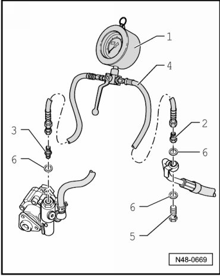
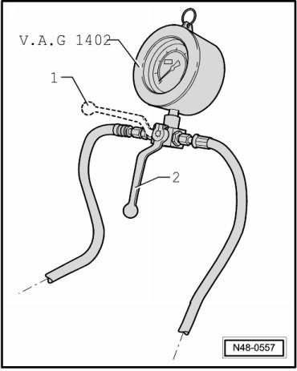

Power Steering Pump: Testing and Inspection
Power Steering Pump Checking Delivery Pressure
Special tools, testers and auxiliary items required
• Hose clamp (3094)
• Power steering tester (VAG 1402)
• Adapter (VAG 1402/2)
• Hose from adapter set (VAG 1402/6)
• Adapter (VAG 1402/4)
- Remove engine noise insulation..
- Clamp off intake hose using hose clamp (3094).

- Remove pressurized line from power steering pump.
- Attach adapter as shown in figure.

1 Power steering tester (VAG 1402)
2 Adapter (VAG 1402/2)
3 Adapter (VAG 1402/4)
4 Hose from adapter set (VAG 1402/6)
5 Banjo bolt
6 Seal
- Remove hose clamp (3094) from intake line.
Make sure that lever on pressure gauge stands in position - 2 -.

- Start engine and top off hydraulic fluid in reservoir if necessary.
- Turn the steering wheel from lock to lock about 10 times.
- Now check delivery pressure.
Test Prerequisites
• Ribbed belt/ribbed belt tension OK
• Sealing of system
• Hoses/pipes are not kinked or constricted
- With engine at idle speed, close lever, (position - 1 -) not more than 5 seconds and read pressure.
Specification for Delivery Pressure
110 to 120 bar
If specified value is not obtained, replace power steering pump. Refer to --> [ Power Steering Pump ] Power Steering Pump.
- Remove pressure gauge and adapter.
- Bleed steering system. Refer to --> [ Power Steering System Bleeding ] Power Steering System Bleeding.
- Check hydraulic fluid level and top off, if necessary.
- Check steering system for leaks. Refer to --> [ Steering System, Checking for Leaks ] Testing and Inspection.